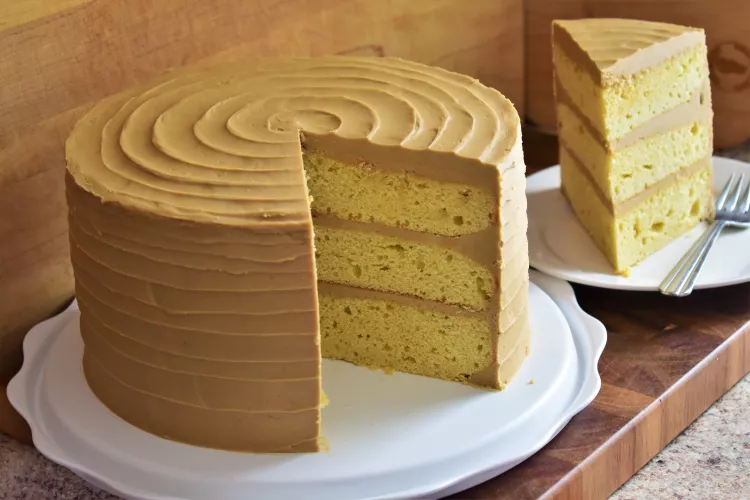

Caramel Cake

Moist caramel cake with delicious layers of cake and caramel.
Ingredients
Cake
3 cups white sugar
1 ½ cups butter
5 large eggs
3 ½ cups all-purpose flour
½ teaspoon baking powder
¼ teaspoon salt
1 ¼ cups whole milk
1 teaspoon vanilla extract
Icing
1 (16 ounce) package brown sugar
1 cup butter
¼ teaspoon salt
⅔ cup evaporated milk
1 (16 ounce) package confectioners' sugar, sifted
2 teaspoons pure vanilla extract
Directions
1. Preheat the oven to 350 degrees F (175 degrees C). Grease and flour three 9-inch cake .
2. Make cake: Place white sugar and butter into a mixing bowl. Beat with an electric mixer on medium speed until light and fluffy. Add eggs, one at a time, mixing well after each addition.
3. Combine flour, baking powder, and salt in a separate bowl. Add flour mixture in batches, alternating with milk, beating batter briefly after each addition. Add vanilla extract; beat until batter makes ribbons when falling from the beaters. Divide batter among the prepared cake pans.
4. Bake in the preheated oven until a toothpick inserted in the center comes out clean, about 30 minutes. Cool on a wire rack for 5 minutes. Run a table knife around the edges to loosen. Invert carefully onto a cooling rack. Let cool, about 30 minutes.
5. Make icing: Combine brown sugar, butter, and salt in a saucepan over medium heat. Stir until brown sugar is dissolved, about 3 minutes. Add evaporated milk and continue stirring. Bring to a gentle boil and let bubble for about 4 minutes, stirring constantly to avoid sticking. Remove from heat and allow to cool, about 5 minutes.
6. Mix confectioners' sugar and vanilla extract into brown sugar mixture using an electric mixer until icing caramelizes and thickens to the desired consistency.
7. Spread icing onto cooled cake layers. Stack layers; ice top and sides.